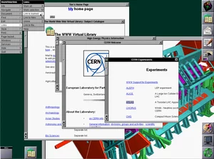

> "The World-Wide Web (W3) was developed to be a pool of human knowledge, which would allow collaborators in remote sites to share their ideas and all aspects of a common project."
> "A W3 “client” program [image]  Figure 3. This is a 1993 screenshot from Tim Berners-Lee's Nexus browser, which was used to view and edit content on the World Wide Web. CERN runs on your computer. When it starts, it displays an object, normally a document with text [>] Go to HTML to discovery more >> document with text. Some of the phrases and images are highlighted: in blue, or boxed, or perhaps numbered, depending on what sort of a display you have and how your preferences have been set. Clicking the mouse on the highlighted area (“anchor”) causes the client program to retrieve another object from some other computer, a “server.” The retrieved object is normally also in a hypertext [<] << Back to hypertext to discovery more format, (so the process of navigation continues." [reference *][*] The World Wide Web — Tim Berners-Lee, Robert Cailliau, Ari Loutonen, Henrik Frystyk Nielsen, and Arthur Secret, 1994
[Next] >>